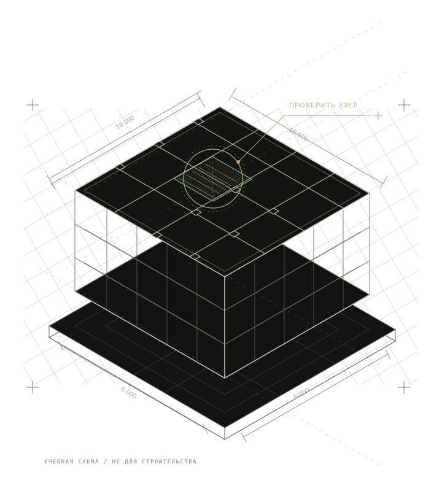
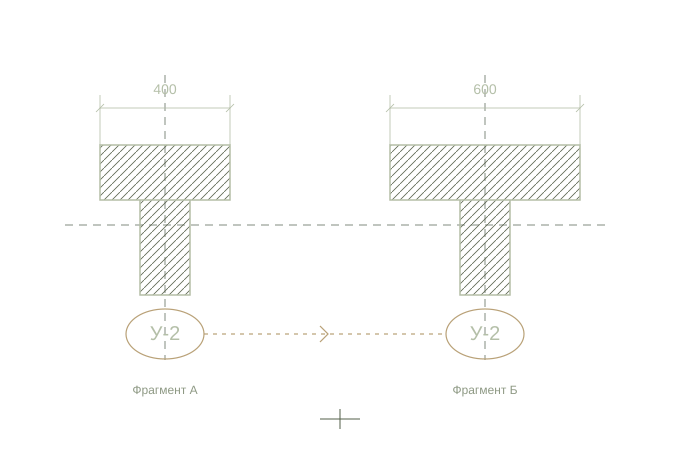

Чертежи и замечания
Подготовить лист к чтению, сформулировать проверку, собрать замечания и сверить их с исходником.
АР / КЖ / инженерные разделыВаши чертежи, документы и задачи — основа практики. Учимся ставить задачи ИИ, проверять ответы и собирать своего рабочего ассистента.
Субботы, 10:00–13:00 МСК · Zoom

Обсудим курс, ваши задачи и формат работы. Участие бесплатное.
01 / Зачем этот курс
Для проектировщиков, которые хотят встроить ИИ в повседневную работу и понимать, где его ответу можно доверять.
Подготовить лист к чтению, сформулировать проверку, собрать замечания и сверить их с исходником.
АР / КЖ / инженерные разделыНайти нужное в комплекте документов, получить ответ со ссылкой на источник и проверить, что он действительно там есть.
Текст / нормы / база знанийСохранить рабочую инструкцию, материалы и критерии проверки в ассистенте, к которому можно вернуться с новой задачей.
Инструкция / контекст / результатНачать можно с опыта обычного чата. Программировать для прохождения курса не требуется.
02 / Логика работы
Разберём на небольшом учебном примере. Важно пройти весь путь: от исходного листа до основания замечания.

Исходные данные
На фрагменте показаны две разные детали с маркой «У-2». Подготовим изображение так, чтобы марки и подписи читались.
Граница задачи: только видимый фрагмент. Остальной комплект пока неизвестен.
Постановка задачи
«Составь список марок узлов на фрагменте. Покажи повторяющиеся обозначения. Для каждого укажи место на листе. Не делай выводов по отсутствующим данным».
Формат ответа задан заранее: марка → расположение → что нужно уточнить.
Проверка результата
Сверяем обе марки с изображением и проверяем их по полному комплекту. До этой сверки одинаковое обозначение остаётся кандидатом на проверку.
Результат: проверяемое замечание с понятным основанием.
Иллюстрация метода обучения. Для своей практики используйте документы, разрешённые к такой обработке.
03 / Программа 00–05
Подготовка перед стартом и пять последовательных модулей. В каждом — практика, проверка и результат, который остаётся у вас.
На выходеГотовое рабочее место и понимание, что понадобится к первому занятию.
На выходеСписок ваших рабочих задач и критерии, по которым вы примете результат.
На выходеПроверенный запрос, принятый результат и запись порядка работы.
На выходеАссистент для одного повторяющегося рабочего процесса.
На выходеПодготовленная база знаний и порядок проверки ответов по источникам.
На выходеРабочий проект ассистента, реестр документов и проверенный результат.
04 / Как учимся
С 28 ноября по 26 декабря. Встречаемся в Zoom с 10:00 до 13:00 по московскому времени.
20–30 минут каждого занятия — вопросы и разбор заданий. Остальное время работаем по теме модуля.
Евгений проверяет ДЗ каждого участника в течение трёх рабочих дней. В учебной Telegram-группе можно задавать вопросы по ходу работы.
Группа выпускников для вопросов, обратной связи и предложений. Методички — бессрочно, записи — до 26 июня 2027 года.
05 / Что остаётся у вас
К концу курса у вас будет основа ассистента для выбранного рабочего процесса и понятный способ проверки его ответов.
06 / Кто ведёт
Один ведущий.
Последовательная работа с вашей задачей.
Вместе пройдём путь от первого запроса до ассистента с инструкцией и базой знаний. Я веду занятия, проверяю домашние работы каждого участника и отвечаю на вопросы в группе.
Задать вопрос Евгению07 / Участие в потоке
Старт 28 ноября. До 15 участников, пять живых занятий и работа с вашими задачами.
19 900 ₽
Первые пять оплаченных мест
Цена зависит от очередности подтверждённых оплат. Перед выставлением счёта Евгений подтвердит наличие места и его стоимость.
Подготовьте сообщение и отправьте его Евгению в Telegram. Он подтвердит место и пришлёт условия участия и счёт.
Отправьте это сообщение Евгению, чтобы продолжить запись.
Открыть TelegramЕсли Telegram открылся без текста, вставьте скопированную заявку в чат @EvgeniyKotzur.
Евгений отвечает на заявку, уточняет цену и присылает условия участия.
После согласования условий — персональный счёт ЮKassa. После оплаты вы получаете чек самозанятого.
В течение рабочего дня после подтверждения оплаты — методички и приглашение в учебную группу.
Да. Начинаем с подготовки инструментов и постановки задачи, затем переходим к своему ассистенту и базе знаний. Для практики пригодятся ваши задачи из проектирования; программирование не требуется.
Компьютер с интернетом, Zoom, Telegram и Google-аккаунт для персонального доступа к методичкам. В подготовке разберём аккаунты ИИ-сервисов. До оплаты уточните у Евгения необходимые подписки и возможные дополнительные расходы.
Останется запись: доступ к записям пяти занятий — до 26 июня 2027 года. Вопросы по материалу можно задавать в учебной группе, а домашнюю работу сдавать на проверку.
Евгений проверяет работу каждого участника в течение трёх рабочих дней. На каждом занятии 20–30 минут отводится вопросам и групповому разбору заданий.
Методички доступны для бессрочного просмотра на Google Диске по вашему Google-аккаунту. Скачивание, копирование и печать отключены. Готовые запросы и рабочие формы выдаются отдельно в Telegram для удобного копирования.
Ваш проект ассистента, инструкция, подготовленные источники и проверенные результаты. Методички остаются доступны бессрочно, записи — на шесть месяцев после окончания курса. Для вопросов и обратной связи будет группа выпускников в Telegram.
Отправьте заявку Евгению. До оплаты он подтвердит место, цену и предоставит условия участия, оплаты и возврата. Заявка сама по себе не закрепляет место. После подтверждения оплаты вы получаете чек и в течение рабочего дня — персональный доступ к методичкам и учебной группе. Для уточнения или возврата напишите ask.kozurev@gmail.com или в Telegram.
Следующий рабочий инструмент
вы соберёте сами.